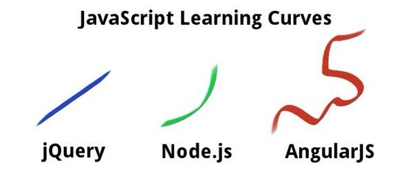

Clint Nash
Edit profile
Results for javascript
Top / All / People you follow
20 new results
-
Keep up with the latest in JavaScript, WebGL, CSS3, mobile APIs, Node.js, AngularJS + more March 11-13 at
#FluentConf http://oreil.ly/1isutzS -
-
10 Cool CSS and JavaScript Tuts and Plugins http://bit.ly/1dnF0H9 pic.twitter.com/KHoeOi2Fgy
12:51 PM - 5 Jan 14 · Details Flagged (learn more)
-
-
-
Writing a book about
#JavaScript Application Design! "Write clean applications that deploy with the push of a button" http://buff.ly/1i6Y40IExpand CollapseFollowed by Tech.Pro and 10 others
-
-
Photos
·
View all

-
People
·
View all
-
John ResigVerified account
@jeresigFollowed by John Pavley and 1 other
-
 JavaScript Daily
JavaScript Daily
@JavaScriptDaily -
Badass JavaScript
@badass_jsFollowed by Abry Maxime and 4 others
-
John ResigVerified account
-
math.js: An Extensive Math Library for JavaScript and Node.js - http://mathjs.org/
-
Window.requestAnimationFrame() - Web API Interfaces | MDN http://owl.li/2CFGRg
-
Become a Web Developer from Scratch - Learn
#HTML,#CSS,#Javascript,#PHP, XML, jSON, AJAX, jQuery,#HTML5 &#CSS3 http://goo.gl/tSCXTP -
“Evaluating JavaScript code via eval() and new Function()” by
@rauschma http://www.2ality.com/2014/01/eval.html … ^ar -
-
Build out these forms w/jQuery then
#AngularJS, and you'll develop a real appreciation for the simplicity of Angular! http://buff.ly/184T8JdExpand CollapseFollowed by Saikiran Yerram and 10 others
-
-
What features would you like to see in a color manipulation library? http://bit.ly/1lo0ivc
Expand CollapseFollowed by Craig Dallimore and 6 others
-
Jan 5: Save 50% on Node.js in Practice and Third-Party JavaScript. Code dotd010514tw at http://conta.cc/KquIPM #nodejs#javascript
Expand CollapseFollowed by Rowblr.js and 5 others
-
Currying and Partial Functions in JavaScript | Dr Dobb's http://owl.li/2CFvST
-
RT
@SublimePackages UMD snippets: JavaScript Universal Module Definition snippets for Sublime Text http://bit.ly/1apv5jn -
45 JavaScript Tips, Tricks and Best Practices http://bit.ly/19J6Xh5
View summary Hide summaryRetweeted by Fernando Serapio
-
Introduction to Object-Oriented JavaScript - JavaScript | MDN http://owl.li/2CFlPX
-
Updated repo for my JavaScript patterns book: https://github.com/addyosmani/essential-js-design-patterns …. Includes bug fixes, minor rewrites, Grunt for build-process.
View summary Hide summaryRetweeted by coffeescript and 1 other
-
ogv.js: An Ogg Theora and Vorbis Video Decoder in JavaScript - http://badassjs.com/post/71980473022/ogv-js-an-ogg-theora-and-vorbis-video-decoder-in … - because, reasons.
-
-
-
One of the cooler
#javascript projects i've seen in a while.#voxeljs http://voxeljs.com/ -
Tom Dale on Ember and JavaScript Frameworks: http://www.infoq.com/interviews/tom-dale-ember …
-
Understanding, measuring and improving code quality in JavaScript http://www.slideshare.net/mobile/heavysixer/code-quality-29610071 … Great breakdown
Expand CollapseFavorited by Joe Parry and 1 other
-
OCRAD.js: Pure JavaScript OCR via Emscripten - http://antimatter15.com/wp/2013/12/ocrad-js-pure-javascript-ocr-via-emscripten/ …
Expand CollapseRetweeted by Merrick Christensen and 7 others
-
My last post of 2013! Everything you wanted to know about JavaScript scope http://toddmotto.com/everything-you-wanted-to-know-about-javascript-scope …
 CSS Design Awards
CSS Design Awards
 Christian Heilmann
Christian Heilmann
 Peter deHaan
Peter deHaan
 kangax
kangax
No Tweet results for javascript.
You’ve reached the end of the Top Tweets for javascript.
Loading seems to be taking a while.
Twitter may be over capacity or experiencing a momentary hiccup. Try again or visit Twitter Status for more information.